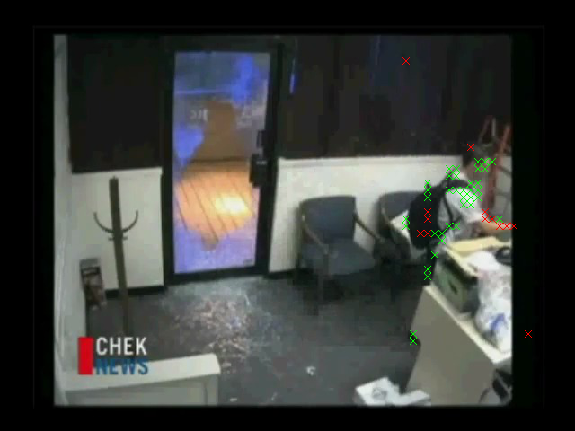

Automatic Foreground Segmentation in Surveillance Videos
Development Environment: MS Visual Studio 2008 under Windows 7- Introduction
- Test Videos
- Libraries
- Mixture of Gaussians Segmentation
- DCT-Based Segmentation
- Program Usage / Code Setup
- References
Introduction
The purpose of this project is to implement and compare two techniques for automatic foreground detection in videos, primarily in surveillance videos where the camera position doesn't vary much. Most automatic foreground segmentation techniques will try to learn some sort of a background model and classify foreground pixels as those that are "different enough" from that model as objects move through the scene. The challenges come with learning the background model from scratch in the face of data that is both part of the foreground and background, adapting the background model to deal with illumination or other changes, and determining what triggers a pixel to be classified as a foreground pixel.
Some of the earlier methods tried to come up with a stochastic background model in advance and then proceeded to use these static models to classify objects throughout [4]. However, these methods break for even the slightest change in the background that validates the stationarity assumption. Clearly some sort of adaptive technique is needed to model the background. Kalman filter approaches have been used as an adaptive technique to solve this problem [4]. However, just like with any application of the Kalman filter, its application suffers from some of the limitations of a unimodal distribution. For instance, if the room changes illumination (different times of day), the Kalman Filter can only represent one of the illumination states at any given time. Hence, it will take a long time to converge to the new mean, etc.
The first technique I implemented is an extension of the Kalman Filter methods to tracking a multimodal distribution at each pixel, using a Mixture of Gaussians[1][2]. A (semi) real-time approximation to expectation maximization is used to track the means and standard deviations of the multiple hypotheses over time. The idea is to learn models for K different states over time, some of which can represent different foreground models that pass through the scene, and others for representing various background techniques. Criticism of this technique has been its slow convergence, which I will explore in this project.
The other technique I implemented is a completely different approach to the problem entitled "A transform domain approach to real-time foreground segmentation in video sequences"3 (which was actually co-written by the professor of this course back in 2005). I refer to this technique more compactly as the DCT-Based Segmentation in this writeup, because it relies solely upon the DCT coefficients of each 8x8 block to do the segmentation. The motivation for this will become clear later when I get into the guts of this method.
Test Videos
I tried to get a variety of test cases that span different types of illumination changes, different types of scene changes, and different distributions of color content to rigorously test my implementations of the algorithms. All videos can be found in this directory. The descriptive list is below, where I ordered the videos in ascending order of projected difficulty:
- theft.avi
This is a black and white surveillance video I found on youtube which shows a bunch of employees walking in and out of an office, and then flashes to a guy who is suspected to have stolen something out of the office. This is by far the simplest example, as there are no illumination changes and the camera remains stationary the entire time. - surv.avi
This is the next step up to a color surveillance video I found out youtube with stationary cameras (four viewpoints shown in four corners of the image) set up at someone's house (who's clearly very rich). There is no illumination change, but there's a lot more going on in this video than there was in the previous one (cars driving down the road, birds walking on the ground, car pulling into the driveway). - myhead.avi
This is a video taken with my webcam of me moving my head around in my room at my parents' house back in Fort Washington, Pennsylvania over break. There's a very powerful light in the background that causes my camera to oversaturate when it comes into view, and my camera is trying to correct for illumination the whole time. This is a good test for multiple changes of illumination in the scene that a unimodal or static background model would fail on. - catch.avi
This is a video of my brother and me running around in our basement throwing balls to each other. At one point I go and flip the light switch off. This tests a variety of different foreground objects and one global illumination change with a fixed camera - breakin.avi
This is a color surveillance video from high quality cameras that shows a break-in and entry at an office (that's ironically part of a company working on surveillance technology). There are a total of three camera viewpoints but only one is shown at a time. The video constantly switches back and forth between them (hence, the background is constantly oscillating). - soccer.avi
Just "for kicks" I decided to try out an example with a nonstationary camera. This is a video of someone kicking a soccer ball on a golf course, where the camera pans left and right and zooms in/out multiple times. Hence, the background only remains constant for a very small amount of time. Neither method is designed to deal with this
Libraries
Before I can use my programs, my video files need to be split up into a sequency of JPEG images using ffmpeg. I relied heavily on two libraries to load these JPEG images into memory various ways. The first is the CImage library[5], which I used to load images from JPEG files, to create a user interface that shows real-time segmentation, and to save segmentation results to a sequence of bitmap files.
The second library I used was the Independent JPEG Group (IJG)'s library libjpeg[6]. This library allowed me to conveniently extract the luminance component of the 64 DCT coefficients in each block. This was a little tricky and required some Googling, but once I got it to work it allowed me to take advantage of the fact that the DCT coefficients are already computed in JPEG images, so that I didn't have to do re-do the forward DCT myself in the DCT-Based Tracker (hence saving valuable computation time).
As the segmentation takes place, I output a sequence of bitmap images that can later be consolidated back into a single video file using ffmpeg.
Mixture of Gaussians Segmentation
Stauffer and Grimson of MIT's AI Labs introduced the first multiple hypothesis tracker for a background models using a Mixture of Gaussians[1]. I also drew on a paper a few years later that took a more careful theoretical look at the algorithm to help me choose values for the parameters mentioned in the Stauffer/Grimson paper[2]. Let me now briefly review the algorithm in pseudocode:
Algorithm Pseudocode
- At each pixel, maintain a mixture of weighted Gaussians to represent the possible RGB values. Each Gaussian has a prior probability weight Omega (where the prior weights sum to 1). There must be N >= 3 different multivariate Gaussians at each pixel (I experiment with 3 and 5 in my program). The idea is that some of the modes will be able to represent various foreground objects that pass by that pixel, while the rest will represent the different background states that are possible. Each mode is a multivariate Gaussian since it needs to represent a distribution over 3 dimensions (R, G, and B). The assumptions made in [1] are that the R, G, and B components are independent of each other, so probability distribution Eta for a given pixel Xt = (Rx, Gx, Bx) against the distribution with mean Mu and standard deviation of Sigma (for one of the components out of R, G, and B) actually ends up being:
\[ \eta(X_t, \mu, \sigma) = \frac{1}{ (2 \pi \sigma)^{ \frac{3}{2} } } e ^ { -\frac{ (X_r - \mu_r)^2 (X_g - \mu_g)^2 (X_b - \mu_b)^2 }{2 \sigma^2} } \]
- Initialize each of the N Gaussians with means as evenly spaced as possible in color space and with standard deviations starting out to be about 30 (assuming each R, G, and B component are between 0 and 255)[2]. I chose the means to be centered at red, green, blue, white, and black. These will be adaptively updated as the algorithm cycles through the frames of the video
- For each frame Ft in the video starting at the first frame (t=1):
- For each pixel P in each frame Ft:
- Given Xt, the value of pixel P at time t, we want to find the Gaussian G in the mixture that maximizes the posterior probability P(G | Xt). Stauffer and Grimson approximate this probability with the following procedure: Find the mode in the mixture that is within Lambda = 2.5 standard deviations of Xt[1].
- If there are multiple modes that fall within 2.5 standard deviations of X, choose the one with the largest value of (Omega / Sigma). This is a rough measure of the "peak" of the probability distribution of each mode, since a larger Omega (prior probability) scales the Gaussian up, and a smaller Sigma (standard deviation) scales the height of the center of the Gaussian up.
- If there are no modes that fall within 2.5 standard deviations of X, create a new mode centered at X with an initially high standard deviation ([2] recommends a standard deviation of 30).
- Once the "matched" mode Gm has been selected from the mixture, update the weights of the ith mode as follows:
\[ \omega_i = (1 - \alpha) \omega_i + \alpha M_t \]
where Mt is 1 if t is the chosen matched distribution, and Alpha is the learning rate, which I chose to be 0.01 by default in my program. This has the effect of increasing the weight of the matched distribution and decreasing the weight of all others. All weights must be re-normalized to sum to 1 after this step.
Note that a higher Alpha will cause the weight of the matched distribution to be updated much more quickly, hence the name "learning rate."
-
The next step is to update the Gaussian of the matched distribution (the rest of the distributions remain the same). First, calculate the probability of observing Xt given the matched Gaussian, in the manner described above, and store it in a variable Rho:
\[ \rho = \alpha \eta (X_t | \mu, \sigma) \]
Now the mean and standard deviation can be updated as follows:
\[ \mu_t = (1 - \rho) \mu_{t-1} + \rho X_t \]
\[ \sigma_t^2 = (1 - \rho) \sigma_{t-1}^2 + \rho (X_t - \mu_t)^T (X_t - \mu_t) \]
- Given that the matched distribution Gm has been found and all weights have been updated properly, the matched distribution can now be classified as a foreground or background mode. To do this, sort all of the modes in descending order by the same peak estimator that was used before to choose the most likely matched distribution: (Omega/Sigma). The intuition here is that background modes will occur more often (higher prior probability Omega) with less variation (smaller standard deviation Sigma), so the backgrounds will be at the beginning of the list sorted by (Omega/Sigma). More specifically, the Stauffer and Grimson method selects the number of backgrounds B by the following in this sorted list:
\[ B = argmin_b ( \sum_{k = 1}^{b} w_k > T) \]
T is a number between 0 and 1 that represents the proportion of time that the background is expected to be in the scene (it's the expected sum of the priors of the background modes). I used T = 0.7 as recommended in [2]. If the matched distribution falls within the first B modes sorted as such, then it is a background pixel. Otherwise, classify it as a foreground pixel. In my visualizer, I set the green component of all foreground pixels to 1 in each frame so that foreground objects end up getting highlighted in green
- Given Xt, the value of pixel P at time t, we want to find the Gaussian G in the mixture that maximizes the posterior probability P(G | Xt). Stauffer and Grimson approximate this probability with the following procedure: Find the mode in the mixture that is within Lambda = 2.5 standard deviations of Xt[1].
- For each pixel P in each frame Ft:
This algorithm runs at about 0.5 frames per second on my laptop (so it's not feasible as a real-time algorithm
NOTE: Since I initialize the modes to be pure red, green, blue, white, and black, it's unlikely that any of them will completely represent what's actually going on in the scene. So it usually takes about 10-20 frames for the model to latch onto the background; a new mode is generated at each pixel that actually represents the actual background color at the first frame and its weight slowly increase proportionally to Alpha. In the mean time, almost everything gets classified as foreground (the first 10-20 frames are very green, and then the method suddenly snaps into place). Here are the results for each video:
- bgmog/theft.avi
The algorithm works extremely well for this example (it even detects the door opening and closing as the employees walk in and out). Here's a screenshot of the 224th frame where three people are in view:
Note how some parts of the leftmost person's face don't get classified as foreground. This happens if they are relatively similar in shade to the background. This is a general trend I've noticed with the MOG method.
The only other interesting thing to point out in this example is that there are a few speckles of foreground on the leftmost wall, which intensify a bit when the door is opened. I suspect that these are due to rapid illumination changes from frame to frame (and changes when the door is open and blocks/unblocks some light from the stairwell).
One more little experiment I did here to give evidence that the implementation was working properly was to plot the prior probability (Omega) of the matched hypothesis over time for one of the pixels in the door. Here's what the plot looks like:
Before anyone arrives at the door, the prior probability of the matched Gaussian (a background mode) is increasing monotonically. Then around frame 100 someone arrives through the door and the a new matched distribution is created with a very small probability (about 0.05), which ends up getting classified as foreground. This new foreground mode's prior then begins to increase proportionally to the learning rate. Then at around frame 130, the person moves out of the way and the background mode that was learned before gets re-adopted. In the mean time, this background mode's prior probability has decreased a bit, but it was at least still in memory. This is one of the advantages of using this method; it's able to remember a number of background and foreground distributions for some time and re-adopt them whenever necessary.
The process I just went through repeats each time a person walks through the door or wave his/her arm past the pixel I was looking at
- bgmog/surv.avi
Here's an example of this process, taking frame 321 (we can see it detecting a car pulling into the driveway and a couple of ducks walking there):
This does a pretty good job detecting the foreground objects (cars, ducks, etc). It also detects the truck's shadow as it pulls into the driveway, which isn't entirely desirable since that's technically an illumination change. When the car parks, however, the car quickly fades into the background at around 0:29 (within about 10-20 frames, the same amount of time that the videos take to latch onto the initial background). This is perfectly consistent with the way the problem was posed, however; we're interested only in objects that are moving in the scene. Once the car comes to rest, it becomes part of the background by this definition. The program does detect the car door open, though.
- bgmog/myhead.avi
Here's where things start to get a little bit interesting. First of all, since some connected regions of my face are the same shade, they can erroneously be detected as background even when I move slightly (since the color of a single pixel isn't changing much when I move my face across it). Also, 10-20 frame convergence becomes a problem for rapid changes in illumination. For instance, in the picture below, an illumination change led the classifier to erroneously believe that the region directly to the right of my head was foreground, because the suddenly brighter pixels were much different from the trained background modes
Conversely, if not enough action is happening (aka I'm moving my face too slowly), large parts of my face, which is the foreground object, can be classified as background all of a sudden:
Hence, it's not so straightforward to choose a good value for Alpha, the learning rate. An Alpha that's too large will take a while to adjust to illumination changes, but an Alpha that's too small will cause foreground modes to gain high prior probabilities and, hence, become classified as background.
- bgmog/catch.avi
This is susceptible to a lot of the same problems with changing illumination as the previous example. When the lights are flipped off, for example, most of the scene gets classified as foreground for a few frames:
One really interesting thing to note here is that you can make out a "ghost" outline of where I was standing for what must have been an extended period of time (I circled this in red). That must have been treated as background before since I wasn't moving much, but by the time the lights were turned off the prior had decreased quite a bit. When the lights were switched off, the illumination at those pixels was a similar dark shade to what I was wearing, so that mode with a small prior that represented my hoodie before got adopted as foreground mode for a bit.
Even in spite of all of this, a hundred or so frames later, the model has re-adjusted reasonably well
So it doesn't recover so gracefully right away, but it does eventually recover. Also, I was impressed with how well it performed on a variety of foreground objects (my brother and me, the objects we were throwing at each other, etc):
- bgmog/breakin_5.avi
This has the same problems changing cameras that the previous two examples had changing illumination at first. The really cool thing about this example, though, is that it shows how well using 5 hypotheses works on "remembering" previous backgrounds when the scenes change back and forth quickly. The first time that the scene switches from camera 1 to camera 2, most of the scene gets classified as foreground (same problem as I mentioned before):
But the second the scene switches from camera 1 to camera 2, the modes are already there for camera 2 so the scene is segmented nearly properly for the first switched frame!!
After observing this, I thought this would be a good example to try varying the number of hypotheses N, with the expectation that more Gaussian modes per pixel would do a better job of remembering information from multiple viewpoints. I tested it with N = 3 modes per pixel and N = 5 modes per pixel, but actually didn't find that it made much of a difference. If you compare both videos at 7 seconds breakin_5 has slightly less false positives (look around the "check news" sign), but that's the only noticeable difference between the two videos.
- bgmog/soccer.avi
This example is a failure case, as expected since a camera that moves this much is beyond the scope of the problem definition. This does extremely poorly except for a small slice during the middle where the camera is semi-stationary for a second or two. For the rest of the time, camera motion is usually translated into foreground objects appearing, as can be seen in the example below:
I was overall impressed with the results of the MOG method; they exceeded my expectations. I was warned that MOG takes an extremely long time to converge but with my choice of Alpha = 0.01, it only ended up taking between 10-20 frames for the new background to be modeled properly. Of course, this can be too long and very noticeable, especially in with changes of illumination, so hopefully the next method will deal better with illumination changes.
DCT-Based Segmentation
The DCT-based segmentation technique presented in [3] approaches the problem from a completely different angle. Instead of trying to keep multiple hypotheses to track different states of illumination, this tries to deal with illumination offsets directly by using information in the frequency domain. The idea is that illumination should primarily only affect the zeroth DCT coefficient (the DC offset), while the AC coefficients should remain the same. Since the algorithm only relies on DCT coefficients, which can be precomputed and stored in JPEG images, and since it deals with 8x8 blocks at a time instead of pixel by pixel (a factor of 64 decrease in the amount of objects that need to be tracked in the same video), it can run real-time. Here is pseudocode for the algorithm in more detail:
Algorithm Pseudocode
- This whole algorithm relies on two carefully-chosen features per pixel per frame: fDC and fAC:
\[ f_{DC} = DCT(0, 0) \]
\[ f_{AC} = \sum_{i = 0}^3 \sum_{j = 0}^3 (i^2 + j^2) |DCT(i, j)| \]
These two features are computed for illumination 8x8 blocks only (as opposed to the previous algorithm which tracked pixels in color space). These two features can then be tracked over time for each 8x8 block. The idea choosing one of the features to be only DC is that a sudden change in illumination is one cue for a foreground object coming into view of an 8x8 block. But that shouldn't be the only cue since that in itself could be due to an illumination change. The second feature, fAC, tries to get an illumination-independent feel for the texture of the 8x8 block by summing over the first few AC coefficients and excluding the DC coefficient. The higher AC coefficients are weighted higher since they are less likely to be influenced by slowly varying shadows and more likely to be influenced by sharp edges introduced by foreground objects that just showed up in an 8x8 block. However, it is not desirable to use all of the AC coefficients in the 8x8 block since the upper ones can be quite noisy and equally susceptible by influences in specular highlights, etc. Thus, the sum is taken over (u, v) = [0-3] x [0-3] in the frequency domain, excluding (0, 0).
With this concept down, I am ready to explain the rest of the algorithm
- The features fAC and fDC are assumed to be Gaussian distributed at any given point in time. To get an initial distribution, calculate them for the first 20 frames, X and compute the mean and variance as follows:
\[ \mu_0 = med(x) \]
\[ \sigma_0 = 1.4862 (1 + 5/19)) med(abs(X - med(X))) \]
For subsequent frames, the mean and variance of fAC and fDC are updated based on a learning rate Alpha, which is very similar to the learning weight used in Mixture of Gaussians, so that the fAC and fDC features latch onto a distribution that matches the background:
\[ \mu_t = (1 - \alpha_{ \mu}) \mu_{t - 1} + \alpha_{ \mu} x \]
\[ \sigma_t^2 = (1 - \alpha_{ \sigma}) \sigma_{t-1}^2 + \alpha_{sigma} (x - \mu_t)^2 \] - Once fAC and fDC have been determined, along with tracked estimates for the mean and standard deviation of the two features at each block which evolve over time, foreground segmentation can take place. A foreground block satisfies one of these two conditions or both:
- \[ |f_{AC} - \mu_{AC}| > (0.25 \mu_{AC} + 2.5 \sigma_{AC}) \]
- \[ |f_{DC} - \mu_{DC}| > (0.25 \mu_{DC} + 2.5 \sigma_{DC}) \]
- \[ |f_{AC} - \mu_{AC}| > (0.25 \mu_{AC} + 2.5 \sigma_{AC}) \]
NOTE: In all of these examples, a red X is drawn over a block with both fAC and fDC triggered, while a green X is drawn over a block with the fDC threshold triggered only.
- bgdct/theft.avi
The results here are reasonable, but throughout this example and all the subsequent examples there's an annoying problem with noisy false positives. This algorithm is usually able to detect the foreground quite well but for almost every foreground block that it detects, there's another false positive classified as a foreground object somewhere. This usually flickers on and off as the video sequence progresses. NOTE: I could have implemented size filtering here as suggested in the paper, which may cut down on that type of noise, but I didn't have a chance to do that yet. Also, some of the foreground objects I want to detect are only a few blocks big.
- bgdct/surv.avi
This has the same problem with speckled noisy false positives throughout, which I think may be attributed to a low initial variance that's learned from a background that doesn't vary much in the first 20 frames. Hence, even a very minute illumination change (or any other type of noise) may trigger a foreground detection with some probability throughout the image. This could explain why the pattern also looks so noisy and is equally distributed throughout the image, as in this conception the false positives form a Poisson process. I believe this may be an inherent flaw with the algorithm run on a background that's nearly perfect.
In this image, though, note how it still does a good job of tracking the relevant foreground objects in the scene in addition to the noise:
- bgdct/myhead.avi
Compared to the MOG technique, this particular example is affected much less by changes in illumination. The performance is about the same from frame to frame regardless of illumination (except for one little hiccough towards the end that only lasted for a few frames). In the frame below, for example, an illumination change has just taken place (I've just moved out of the way of the light), and there are a lot of green Xs drawn (indicating a significant DC change), but the red Xs remain on the boundary of the moving object. This is because the lighting change has caused a significant DC change but not an AC change in the large region in the upper right corner. The introduction of the AC feature has delivered on its promise to be insensitive to illumination changes (at least in this example). If I had implemented size filtering (which checks to make that the ratio of red squares to green squares is large enough in a connected component), that green area would have been removed.
- bgdct/catch.avi
This is one of the best examples, and it also proves to adapt to changes in illumination almost instantly. If we ignore the noise I talked about before, it's one of the best segmentations yet. Here's a typical screenshot from this process:

Here's a screenshot less than 10 frames after a significant illumination change:
- bgdct/breakin.avi
The performance of this example is actually quite similar to the performance of the MOG example; there's no clear advantage to using the DCT technique here. In fact, when the first scene change occurs the whole thing gets triggered as foreground just as in the MOG case, and it takes 10-20 frames to settle down (the same amount of time, probably because I also chose Alpha to be 0.01 here just as in my MOG implementation):
It makes sense that this would not be able to resist scene changes, because changing from one scene to a completely different one will give rise to changes in both AC and DC coefficients, not just DC coefficients as in the illumination case. Here's a screenshot giving a flavor for how it does the rest of the time:

- bgdct/soccer.avi
Not much to say here, the exact same failure case as before for the same reason; neither algorithm is designed to deal with moving cameras.
Program Usage / Code Setup
Click here to download the source code for this project
I set up two MS Visual Studio 2008 projects for the two different techniques implemented. The first project, bgmog, contains the following files:
| Filename | Purpose |
| bgdct.cpp | Main program, responsible for training on the first 20 frames, adapting the parameters, and classifying based on the parameters |
| SegImage.cpp, SegImage.h | A class that stores the fac and fdc coefficient arrays and the classification results, along with functions to draw the classification results (red and green Xs). |
| Filename | Purpose |
| bgmog.cpp | Main program; all it does is load the files and set up a single MOGTracker |
| MOGTracker.cpp, MOGTracker.h | Tracks the multiple hypotheses for each pixel. Accepts an image per frame, updates the image, and draws the segmentation results as green blobs once it has finished updating the models based on this frame |
A typical execution run for either bgmog or bgdct is as follows:
bgmog/bgdct [image directory in] [image directory out] [n frames]
The programs expect that "image directory in" contains a set of .jpg frame images numbered starting at 1, and they expect that the image directory out has already been created
References
[1] Stauffer, C.; Grimson, W.E.L.; , "Adaptive background mixture models for real-time tracking," Computer Vision and Pattern Recognition, 1999. IEEE Computer Society Conference on. , vol.2, no., pp.2 vol. (xxiii+637+663), 1999
doi: 10.1109/CVPR.1999.784637
URL: http://ieeexplore.ieee.org/stamp/stamp.jsp?tp=&arnumber=784637&isnumber=17024
[2] P.W. Power, J.A. Schoonees, "Understanding background mixture models for foreground segmentation," in: Proceedings of the Image and Vision Computing New Zealand, 2002, pp. 267-271.
[3] Zhu J, Schwartz SC, Liu B (2005) "A transform domain approach to real-time foreground segmentation in video sequences." In: Proceedings of the IEEE International Conference on Acoustics, Speech, and Signal Processing, Philadelphia, USA, pp. 685-688.
[4] Lecture notes on tracking in images by Szymon Rusinkiewicz, COS 429 Computer Vision Fall 2009
[5] The open-source "CImage Library." http://cimg.sourceforge.net/index.shtml
[6] "LibJPEG". The Independent JPEG Group. http://www.ijg.org/
[7] "19 ffmpeg commands for all needs." http://www.catswhocode.com/blog/19-ffmpeg-commands-for-all-needs
blog comments powered by Disqus